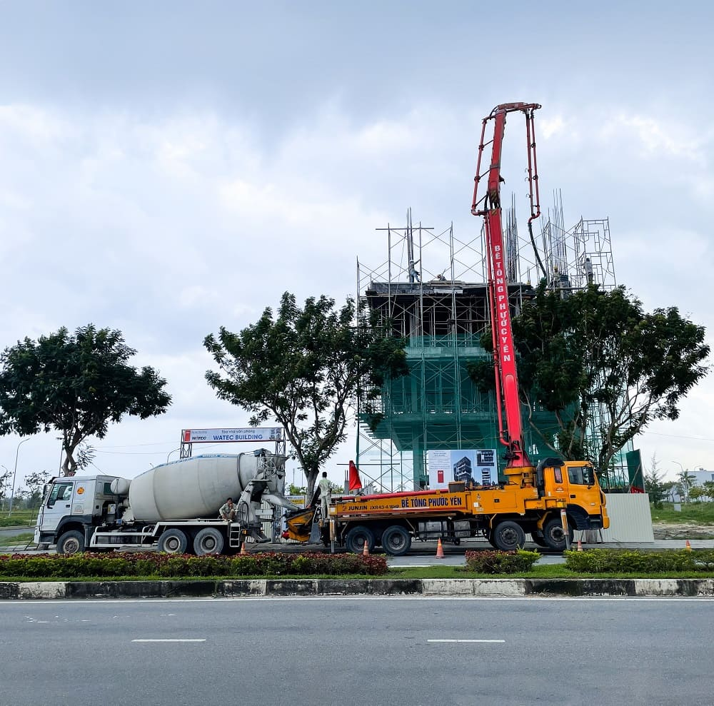
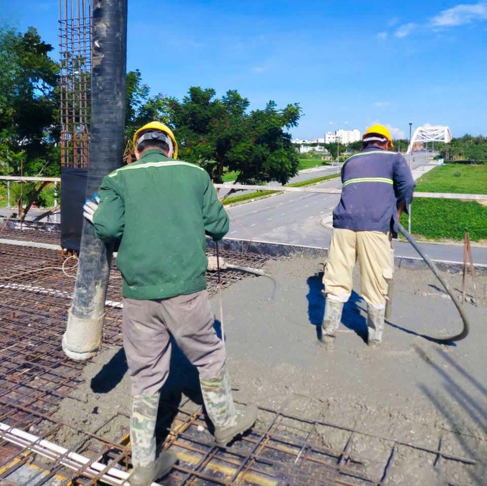
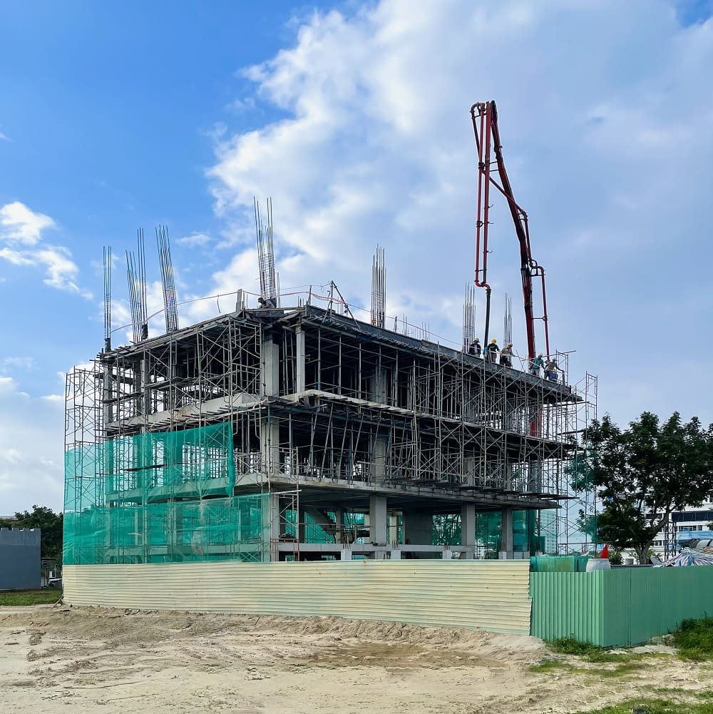
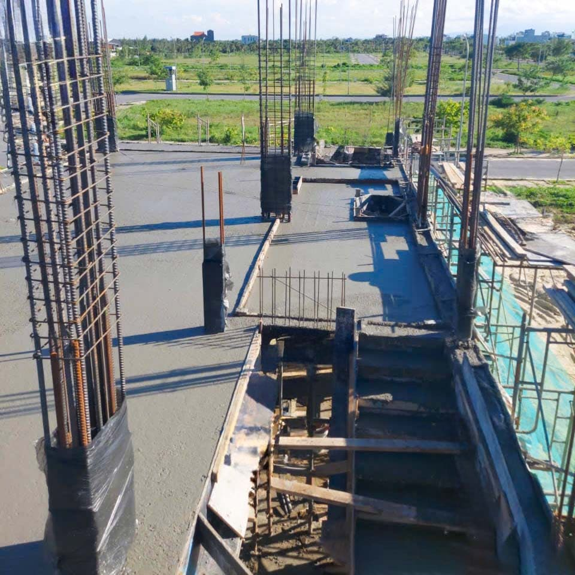
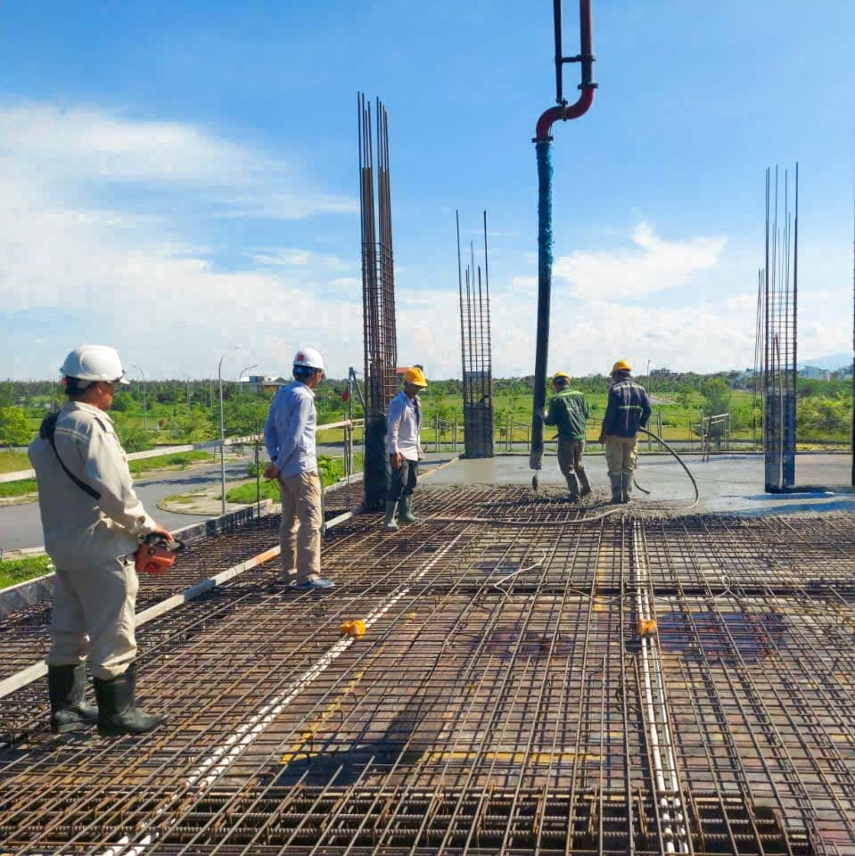
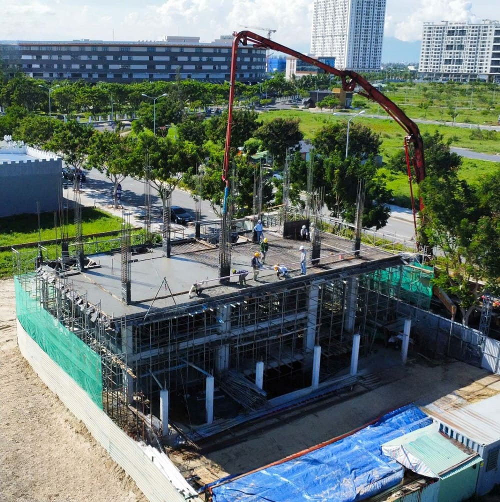

Bê tông tươi và bê tông tự trộn là hai lựa chọn phổ biến trong xây dựng hiện nay, mỗi loại đều có ưu điểm và cách sử dụng riêng. Việc hiểu rõ sự khác biệt giữa hai giải pháp này sẽ giúp chủ đầu tư đưa ra quyết định phù hợp, tối ưu chi phí và chất lượng công trình. Hãy cùng AVA Architects khám phá chi tiết trong bài viết dưới đây để có góc nhìn đầy đủ và chính xác nhất nhé.
Xem thêm:
- Sự khác biệt trong thi công của AVA Architects so với các đơn vị khác
- Thiết kế thi công căn hộ cho thuê Đà Nẵng trọn gói
- Thiết kế thi công biệt thự trọn gói Đà Nẵng 2025
Thành phần của bê tông gồm những gì?
Bê tông là vật liệu nền tảng trong xây dựng, được tạo thành từ ba nhóm cốt liệu chính trộn với chất kết dính và nước theo tỷ lệ tối ưu.
- Cốt liệu thô gồm đá và sỏi. Với bê tông nhẹ có thể dùng vật liệu tổng hợp.
- Cốt liệu mịn gồm cát, đá mạt, đá xay.
- Chất kết dính thường là xi măng và nước, có thể bổ sung phụ gia hoặc nhựa đường tùy mục đích sử dụng.
Khi các thành phần được phối trộn đúng cấp phối, khối bê tông đạt độ đặc chắc, cường độ cao và tính ổn định, phù hợp cho các hạng mục như móng, dầm, sàn, cột và nhiều cấu kiện chịu lực khác.
Hiểu rõ bản chất và thành phần của bê tông giúp bạn đánh giá đúng nhu cầu thực tế, từ đó cân nhắc nên dùng bê tông tươi hay bê tông trộn tay để tối ưu chất lượng và chi phí cho công trình.
Thành phần của bê tông gồm cát, đá, xi măng, nước và phụ gia được trộn theo tỷ lệ chuẩn (C: AVA Architects)
Bê tông tươi là gì?
Bê tông tươi hay còn gọi là bê tông thương phẩm được sản xuất tại trạm trộn chuyên dụng và vận chuyển đến công trình bằng xe bồn ở trạng thái dẻo. Thành phần gồm cát, đá, xi măng, nước và phụ gia được cân đong tự động, kiểm soát chặt chẽ từ khâu cấp phối đến nhiệt độ và thời gian trộn.
Nhờ hệ thống máy móc và quy trình chuẩn, tỷ lệ cấp phối của bê tông tươi đạt độ chính xác cao, hạn chế sai số thủ công, bảo đảm tính đồng nhất của mỗi mẻ trộn. Tùy yêu cầu kỹ thuật, nhà cung cấp sẽ thiết kế cấp phối phù hợp với kết cấu chịu lực, điều kiện thi công và môi trường sử dụng.
Bê tông tươi thường được phân loại theo mác hoặc cấp độ bền, thể hiện cường độ chịu nén của bê tông sau khi đóng rắn. Việc lựa chọn đúng mác bê tông giúp kết cấu đạt độ bền, độ đặc chắc và độ ổn định như thiết kế, từ đó tối ưu chất lượng và tuổi thọ công trình.

Bê tông tươi là hỗn hợp bê tông được trộn sẵn tại trạm trộn và vận chuyển đến công trình để sử dụng ngay (C: AVA Architects)
Bê tông tự trộn là gì?
Bê tông tự trộn là loại bê tông được pha trộn trực tiếp tại công trường, sử dụng cát, đá, xi măng, nước và phụ gia theo tỷ lệ đã tính toán trước. Thợ trộn điều chỉnh lượng nước để đạt độ sụt và độ đặc phù hợp với yêu cầu thi công của từng hạng mục.
Do phụ thuộc nhiều vào tay nghề và quy trình kiểm soát tại chỗ, bê tông trộn tay cần thao tác cẩn thận ở các bước đong đo vật liệu, thời gian trộn và bảo dưỡng sau đổ. Chỉ khi đảm bảo đúng tỷ lệ cấp phối và quy trình, chất lượng bê tông trộn tay mới đạt độ bền, độ đặc chắc và tính ổn định như mong muốn.

Bê tông trộn tay là bê tông được pha trộn trực tiếp tại công trình, phụ thuộc nhiều vào kinh nghiệm nhân công và điều kiện thi công thực tế (C: AVA Architects)
Vai trò của bê tông trong xây dựng hiện đại
Bê tông là vật liệu then chốt trong xây dựng, ảnh hưởng trực tiếp đến cường độ, tuổi thọ và mức độ an toàn của công trình. Khi được thiết kế và thi công đúng chuẩn, bê tông giúp kết cấu làm việc ổn định, hạn chế rủi ro và tối ưu chi phí vận hành lâu dài.
- Bảo đảm chịu lực: Kết hợp cùng cốt thép, kết cấu bê tông cốt thép chịu tải lớn, phù hợp từ nhà ở đến công trình cao tầng và hạ tầng giao thông.
- Nâng chất lượng thi công: Bê tông đạt chuẩn giảm nứt, giảm thấm, hạn chế ăn mòn cốt thép.
- Tiết kiệm vòng đời: Chọn đúng chủng loại ngay từ đầu giúp giảm bảo trì và sửa chữa về sau.
- Rút ngắn tiến độ: Giải pháp hiện đại như bê tông tươi hỗ trợ thi công nhanh và đồng đều.
Vì vậy, khi cân nhắc giữa bê tông tươi và bê tông tự trộn, cần đánh giá tổng thể cả chất lượng, tiến độ và hiệu quả sử dụng dài hạn, không chỉ chi phí ban đầu.
Xem thêm:
- Bảng giá thiết kế thi công nhà trọn gói mới nhất 2025
- Thiết kế thi công nội thất Đà Nẵng – AVA Architects
- Quy trình thiết kế thi công nội thất trọn gói
So sánh ưu và nhược điểm của bê tông tươi và bê tông trộn tay
Trong thực tế thi công, cả bê tông tươi và bê tông tự trộn đều có thể áp dụng cho nhiều hạng mục. Mỗi lựa chọn mang theo ưu điểm và hạn chế riêng, ảnh hưởng đến chất lượng, tiến độ và chi phí.
Thời gian
Bê tông tươi được trộn sẵn tại trạm trộn và đưa đến công trình ở trạng thái dẻo nên có thể đổ ngay, rút ngắn rõ rệt thời gian và bảo đảm tiến độ thi công.
Trong khi đó, bê tông tự trộn phải thực hiện khâu pha trộn tại chỗ, thường chia thành nhiều mẻ do khó xử lý khối lượng lớn trong một lần, vì vậy tốc độ thi công chậm hơn và dễ phát sinh độ trễ.
Tóm lại, chọn bê tông tươi giúp rút ngắn thời gian thi công, hạn chế độ trễ và giữ tiến độ công trình ổn định.

Bê tông tươi thi công nhanh hơn, còn bê tông tự trộn mất thời gian do trộn thủ công tại công trình (C: AVA Architects)
Chi phí
Khảo sát thực tế cho thấy giá bê tông tươi thường cao hơn bê tông trộn tay nhưng mức chênh không lớn. Giả sử cùng thi công sàn 100m2, dùng mác 200 và cốt liệu cát vàng, đá 1 x 2, xi măng PC40:
- Bê tông tươi có giá tham khảo khoảng 1.250.000 VNĐ mỗi mét khối.
- Bê tông trộn tay có giá tham khảo khoảng 1.060.000 VNĐ mỗi mét khối.
Quy ước 1 mét khối bê tông tương đương 10 mét vuông sàn, khối lượng cho 100 mét vuông là 10 mét khối. Khi đó chi phí ước tính cho bê tông tươi là 12.500.000 VND và cho bê tông trộn tay là 10.600.000 VND (Giá tham khảo).
Tóm lại, với cùng điều kiện giả định, bê tông trộn tay có lợi thế về chi phí trực tiếp vật liệu và trộn tại chỗ.
Xem thêm:
- Đơn vị thi công khách sạn Đà Nẵng uy tín – AVA Architects
- Thủ tục xin giấy phép xây dựng thế nào? Lệ phí bao nhiêu?
- Cách nộp hồ sơ xin giấy phép xây dựng online tại Đà Nẵng
Chất lượng
Bê tông tươi được sản xuất bằng dây chuyền tự động, các thành phần được cân đong chuẩn xác nên chất lượng ổn định và đồng nhất giữa các mẻ. Tùy yêu cầu kỹ thuật, nhà cung cấp có thể bổ sung phụ gia để tăng khả năng chống thấm, giảm tỏa nhiệt, rút ngắn thời gian ninh kết.
Với bê tông trộn tay, chất lượng phụ thuộc lớn vào tay nghề thợ và cách đong đo tại chỗ. Quá trình thủ công dễ phát sinh sai lệch về tỷ lệ nước, thời gian trộn và độ sạch của cốt liệu, vì vậy độ đồng đều thường kém hơn bê tông tươi.
Tóm lại, bê tông tươi cho độ ổn định và tính nhất quán cao, nhưng khó kiểm soát trực tiếp chất lượng đầu vào. Bê tông tự trộn dễ theo dõi tại công trình, song cần quy trình quản lý nghiêm và thợ lành nghề để đảm bảo cường độ thiết kế.

Bê tông tươi cho độ ổn định và đồng đều cao, còn bê tông tự trộn phụ thuộc nhiều vào tay nghề và kiểm soát tại công trình (C: AVA Architects)
Độ linh hoạt
Bê tông tươi có khả năng tùy biến cao theo yêu cầu từng hạng mục như chống thấm, cách nhiệt, đạt cường độ sớm và có thể bơm lên cao, nhờ vậy đặc biệt thuận tiện cho công trình quy mô lớn hoặc vị trí thi công khó.
Bê tông trộn tay cần không gian tập kết vật liệu và khu vực trộn tại chỗ. Do thao tác thủ công nên dễ phát sinh tình trạng thiếu hoặc thừa vật liệu, khó giữ độ sụt và tính đồng đều ổn định.
Tóm lại, xét về tính linh hoạt và sự tiện lợi khi thi công, bê tông tươi thường nhỉnh hơn.
Nên chọn bê bông tươi hay bê tông trộn tay khi xây dựng
Từ các tiêu chí đã so sánh, cả bê tông tươi và bê tông trộn tay đều có ưu và nhược điểm riêng. Gia chủ nên cân nhắc điều kiện thực tế để chọn phương án mang lại hiệu quả kỹ thuật và chi phí tốt nhất. Dưới đây là gợi ý lựa chọn theo từng tình huống.
Chọn bê tông tươi khi
- Công trình quy mô lớn hoặc cần đẩy nhanh tiến độ thi công
- Yêu cầu cấp phối đặc biệt như chống thấm, giảm tỏa nhiệt, đạt cường độ sớm nhờ phụ gia
- Không đủ mặt bằng và thời gian để tổ chức trộn tại chỗ
- Vị trí thi công ở cao hoặc khó tiếp cận, cần bơm bê tông lên tầng
Chọn bê tông trộn tay khi
- Công trình nhỏ, khối lượng bê tông ít và dễ tổ chức nhân công
- Khu vực xa trạm trộn bê tông tươi hoặc nằm trong ngõ hẻm xe bồn khó vào
- Chủ đầu tư muốn theo dõi trực tiếp quá trình trộn để kiểm soát chất lượng tại chỗ

Nên chọn bê tông tươi hay bê tông trộn tay phụ thuộc vào quy mô và điều kiện thi công (C: AVA Architects)
Những lưu ý khi chọn bê tông trong xây dựng
Đối với bê tông tươi
Điểm khó nhất với bê tông tươi là khó kiểm soát trực tiếp chất lượng đầu vào. Một số trạm trộn vì lợi nhuận có thể dùng cát, đá, xi măng không đạt chuẩn, ảnh hưởng đến độ bền và an toàn kết cấu. Dưới đây là các gợi ý giúp bạn giảm thiểu rủi ro chọn nhầm bê tông kém chất lượng.
Trước khi nhận bê tông
- Hỏi ý kiến người có kinh nghiệm để chọn trạm trộn uy tín, có hồ sơ năng lực rõ ràng.
- Ghi rõ mác bê tông, tiêu chuẩn kỹ thuật và điều khoản bồi thường trong hợp đồng.
- Với nhà ở dân dụng, có thể yêu cầu nhà cung cấp xuất trình thiết kế cấp phối và tài liệu kèm theo để đối chiếu.
Khi xe bê tông đến công trình
- Kiểm tra niêm chì trên xe và hóa đơn giao hàng trùng khớp hợp đồng.
- Lấy mẫu kiểm tra hiện trường, quan sát hiện tượng vón cục hay tách nước.
- Đo độ sụt theo tiêu chuẩn, chỉ thi công khi thông số đạt yêu cầu.
Kinh nghiệm để tối ưu chất lượng khi đổ bê tông tươi
- Ưu tiên trạm trộn ở gần công trình để rút ngắn thời gian vận chuyển, giữ ổn định chất lượng hỗn hợp.
- Chọn mác xi măng phù hợp mác bê tông theo thiết kế cấp phối.
- Sau khi bê tông đủ cứng bề mặt, tiến hành bảo dưỡng ngay, giữ ẩm liên tục bằng tưới nước và che nắng để tránh khô trắng mặt, hạn chế nứt và thấm về sau.

Khi chọn bê tông tươi, cần ưu tiên nhà cung cấp uy tín và kiểm tra độ sụt, niêm chì xe trước khi đổ để đảm bảo chất lượng (C: AVA Architects)
Khi làm việc với AVA Architects, chúng tôi đề xuất và thẩm định nhà cung cấp bê tông phù hợp, trình phương án để chủ đầu tư phê duyệt trước khi triển khai. Chỉ sau khi nhận được đồng ý, AVA tổ chức thi công và kiểm soát chất lượng xuyên suốt. Đội ngũ kỹ sư đối chiếu thiết kế cấp phối, yêu cầu chứng chỉ vật liệu và mẫu thử, kiểm tra niêm chì xe, đo độ sụt tại hiện trường, lấy mẫu chuẩn nén, ghi nhật ký và nghiệm thu theo mác thiết kế. Quy trình khép kín và hồ sơ minh bạch giúp bê tông đạt cường độ thiết kế, đồng đều giữa các mẻ và bảo đảm độ bền tuổi thọ công trình.
Đối với bê tông tự trộn
Bê tông trộn tay dễ gặp tình trạng không đồng đều và tốn thời gian phối trộn so với bê tông tươi. Để hạn chế rủi ro và cải thiện chất lượng, bạn có thể áp dụng các lưu ý sau
- Cân đong nguyên vật liệu đúng tỷ lệ thiết kế.
- Trộn trên bề mặt phẳng, không thấm hút, sạch bụi bẩn và tạp chất.
- Chuẩn bị đầy đủ dụng cụ cùng cát, đá, xi măng tại khu vực trộn để thao tác liên tục.
- Ưu tiên dùng máy trộn nhằm rút ngắn thời gian và tăng độ đồng nhất của hỗn hợp.
- Trong thời gian chờ đổ cần đảo trộn định kỳ để giữ độ dẻo, tránh tách nước hoặc khô cứng.
- Tính toán khối lượng trước khi trộn để tránh thiếu hoặc dư bê tông khi thi công.
- Sau khi đổ tiến hành bảo dưỡng kịp thời như tưới ẩm, che nắng tương tự quy trình bảo dưỡng với bê tông tươi.
Khi so sánh bê tông tươi và bê tông tự trộn, có thể thấy mỗi lựa chọn đều có ưu điểm riêng và phù hợp với từng điều kiện thi công. Điều quan trọng là gia chủ cần cân nhắc quy mô công trình, tiến độ, khả năng kiểm soát chất lượng và ngân sách để đưa ra quyết định tối ưu nhất, đảm bảo kết cấu bền vững và tuổi thọ lâu dài cho ngôi nhà.
Nếu bạn muốn yên tâm về chất lượng vật liệu, giám sát thi công chuẩn mực và quy trình kiểm soát bê tông minh bạch, hãy liên hệ AVA Architects. Đội ngũ kiến trúc sư và kỹ sư của chúng tôi luôn đồng hành từ thiết kế đến thi công, đảm bảo mỗi công trình đạt chuẩn kỹ thuật và thẩm mỹ cao nhất.
- Market Analyst
- Mỹ Vân là Chuyên viên Phân tích Thị trường, đảm nhận vai trò nghiên cứu và phân tích chuyên sâu các xu hướng của ngành kiến trúc, loại hình dự án và thị trường bất động sản cho AVA Architects. Vân đã và đang hỗ trợ AVA Architects liên tục đổi mới và đưa ra quyết định chiến lược chính xác, đồng thời cung cấp cho khách hàng những góc nhìn giá trị để đưa ra lựa chọn đầu tư hiệu quả nhất. Tất cả đều hướng tới mục tiêu củng cố vị thế tiên phong của AVA và cùng khách hàng kiến tạo nên những giá trị bền vững cho tương lai.
 Blog thiết kế AVA14/09/202699+ Mẫu biệt thự phố đẹp, hiện đại, xu hướng năm 2026
Blog thiết kế AVA14/09/202699+ Mẫu biệt thự phố đẹp, hiện đại, xu hướng năm 2026 Blog thiết kế AVA10/09/2026999+ mẫu biệt thự đẹp đẳng cấp, sang trọng nhất 2026
Blog thiết kế AVA10/09/2026999+ mẫu biệt thự đẹp đẳng cấp, sang trọng nhất 2026 Blog thiết kế AVA09/09/2026Mẫu biệt thự hiện đại sang trọng, hiện đại 2026
Blog thiết kế AVA09/09/2026Mẫu biệt thự hiện đại sang trọng, hiện đại 2026 Blog thi công AVA28/04/2026Lợi ích khi xây nhà trọn gói bạn nhất định phải biết
Blog thi công AVA28/04/2026Lợi ích khi xây nhà trọn gói bạn nhất định phải biết